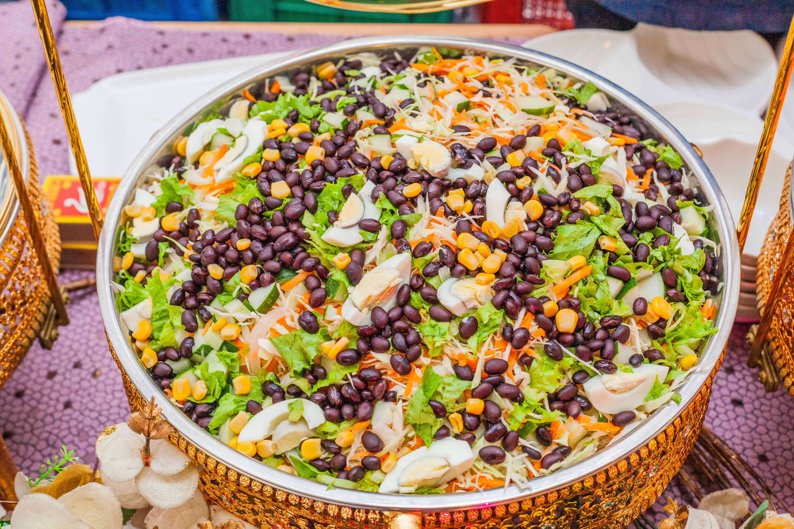

A black bean and couscous salad is a vibrant, Southwest-inspired dish combining fluffy, quick-cooking couscous with hearty black beans, crisp vegetables, and a zesty lime vinaigrette. Typically featuring corn, bell peppers, cilantro, and red onion, this versatile, fiber-rich salad is perfect for meal prep, barbecues, or as a light, refreshing meal.
A classic black bean and couscous salad combines fluffy couscous with black beans, corn, red bell pepper, and fresh herbs, usually tied together with a lime-cumin vinaigrette. It is a quick, customizable, and high-fiber dish that can be served warm or chilled.